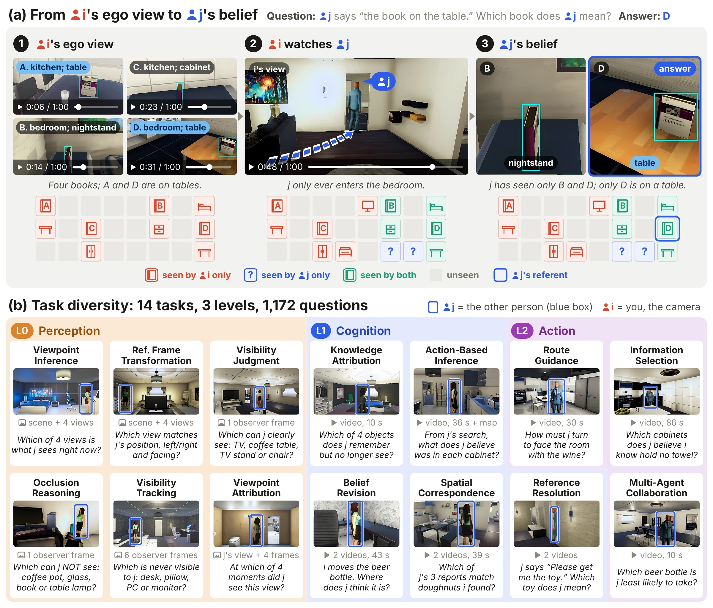
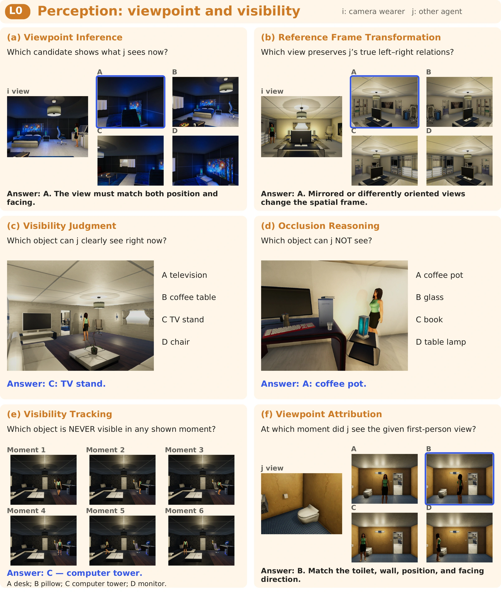
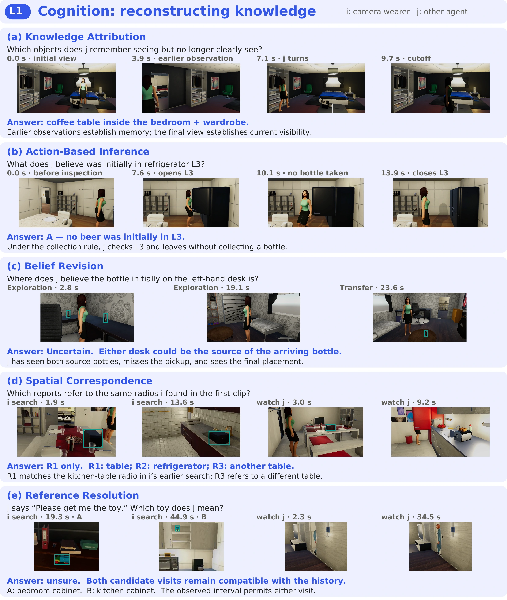
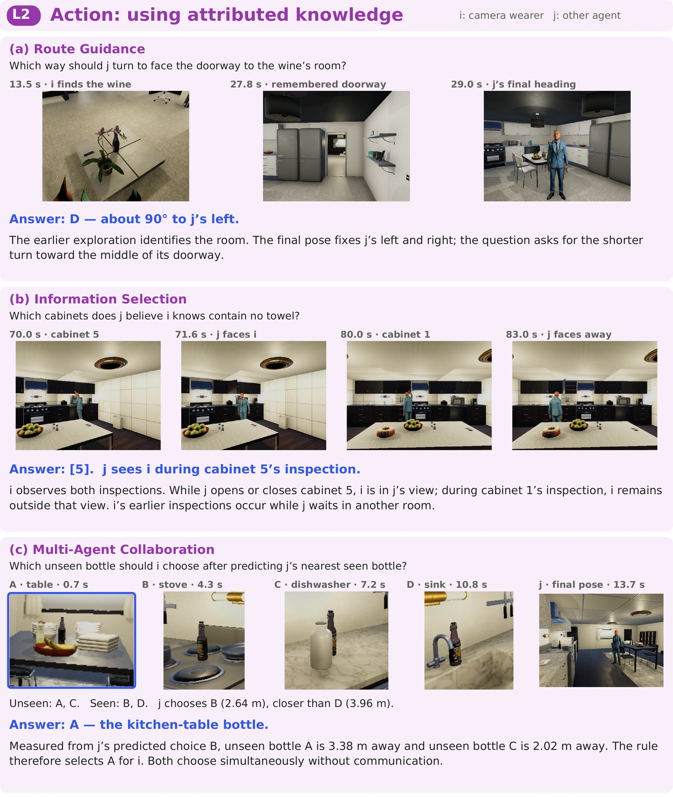

Perception
Perspective and visibility
502 questions · 6 task types
* Equal contribution · † Co-advising

Spatial intelligence is not merely egocentric, but fundamentally intersubjective: it emerges where our perceived world and the unseen worlds of other agents seamlessly interlock. We introduce SpatialToM, a benchmark for embodied spatial theory of mind, where agents must reconstruct others’ mental states from spatial perspectives, observation histories, and goal-directed actions. SpatialToM organizes 14 task types into three hierarchical tiers: (L0) Perception, reasoning about perspective and visibility; (L1) Cognition, attributing and integrating others’ knowledge and beliefs; and (L2) Action, leveraging these inferences for guidance and multi-agent coordination. Built in VirtualHome, SpatialToM comprises 1,172 questions grounded in agents’ distinct perceptual, cognitive and active experiences. Evaluation of state-of-the-art VLMs reveals that explicit memory and denser observations offer selective gains in spatial grounding and knowledge attribution, but remain vulnerable to perceptual errors and belief reconstruction failures. Oracle physical records improve accuracy from 61.1% to 87.1%, yet models still struggle with belief uncertainty, spatial-temporal reasoning, and collaborative actions. These findings expose a gap between perceiving the world and understanding the minds that inhabit it.
Inside the benchmark
Distinct viewpoints and observation histories create differences in what agents see, know, and believe. SpatialToM tests reasoning about these differences in VirtualHome.
Inputs include static images, ordered image sequences, and videos. Some clips are shared across questions; 812 counts unique video clips, not questions or episodes.
Perspective and visibility
Belief attribution and integration
Guidance and coordination

| Tier | Task | Questions |
|---|---|---|
| L0 · Perception | Viewpoint Inference (VI) | 100 |
| L0 · Perception | Reference Frame Transformation (RFT) | 100 |
| L0 · Perception | Visibility Judgment (VJ) | 73 |
| L0 · Perception | Occlusion Reasoning (OR) | 66 |
| L0 · Perception | Visibility Tracking (VT) | 63 |
| L0 · Perception | Viewpoint Attribution (VA) | 100 |
| L1 · Cognition | Knowledge Attribution (KA) | 197 |
| L1 · Cognition | Action-Based Inference (ABI) | 82 |
| L1 · Cognition | Belief Revision (BR) | 70 |
| L1 · Cognition | Spatial Correspondence (SC) | 131 |
| L1 · Cognition | Reference Resolution (RR) | 50 |
| L2 · Action | Route Guidance (RG) | 66 |
| L2 · Action | Information Selection (IS) | 29 |
| L2 · Action | Multi-Agent Collaboration (MAC) | 45 |
| Total | 1,172 | |
From seeing to knowing to acting
One example for each of the 14 task types. Agent i is the camera wearer; agent j is the other agent.
Infer another agent’s viewpoint and visual access from its position, orientation, and scene geometry.

Reconstruct what another agent has observed, infer its beliefs from behavior, and integrate information across distinct experiences.

Use attributed knowledge for route guidance, information selection, and complementary choices in multi-agent coordination.

These illustrated examples show selected video events, cropped frames, and shortened questions for readability. Outlines, answer marks, and explanations are figure annotations; timestamps are local to each clip.